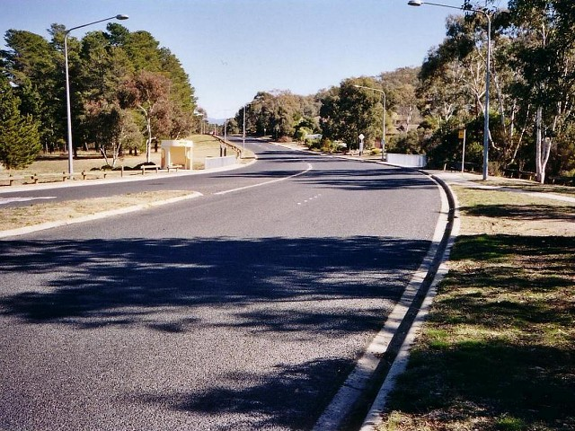
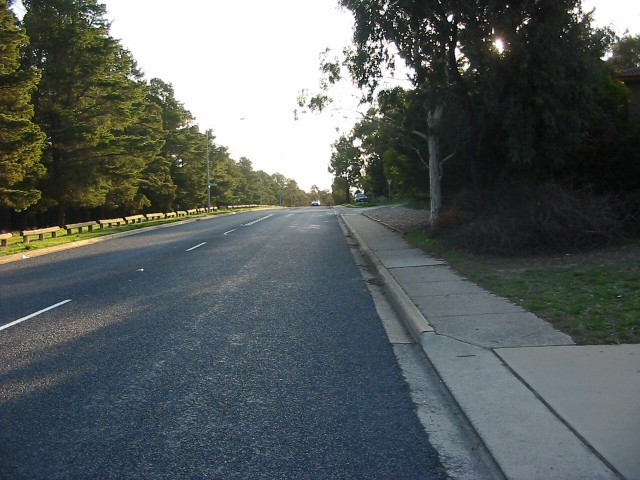
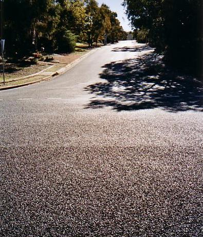
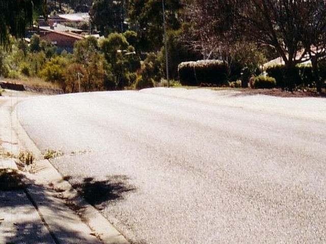
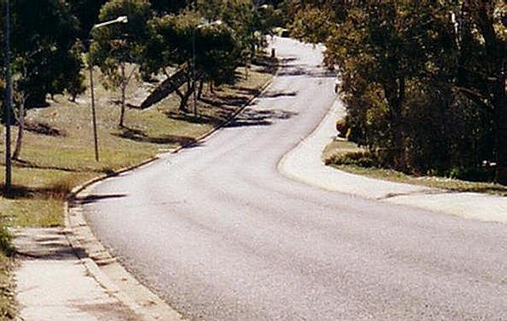
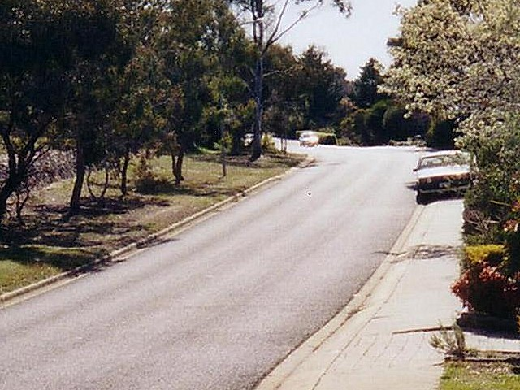

Numbers and arrows on the map represent the location and direction of where the photographs were taken. Click links above to view photo pages.
Macarthur Park - Coyne Street onto Jackie Howe Cresent
|| Contents || Coyne [01-06] | Jackie Howe [07-13] | Merriman [14-20] | Carson [21-27] || Home ||
Numbers and arrows on the map represent the location and direction of where
the photographs were taken. Click links above to view photo pages.
Return to racingcircuits.net's Photo Archive Main Index
|  |
| 01 - From the start-finish line in Coyne Street looking towards the intersection with Jackie Howe Crescent (Give Way sign just visible in distance) |

02 - Closer view of the turn from Coyne Street into Jackie Howe Crescent
|  |
| 03 - The rise in Jackie Howe Crescent from Coyne Street The road has been resurfaced since the heritage marker was installed, and the evidence of the removed section of median strip has been obliterated |

04 - Across the crest of the rise the road swings right
|  |
| 05 - Then bottoms out and rises through a flat-out left hander. The drains are not 'spoon shaped' on the left, but you won't want to be over there at this point anyway |

06 - and by the time you reach the apex here the spoon shape has returned
Photographs and Text ©Mark Taylor. Reproduced here with kind permission.